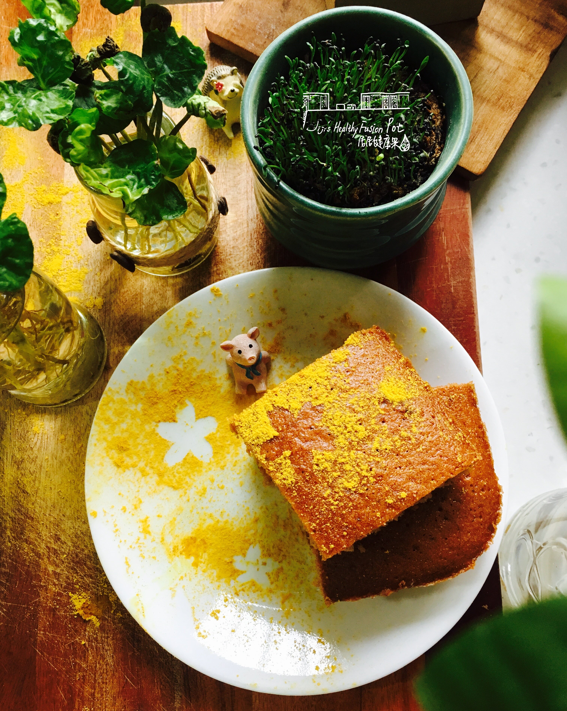

Chinese Five-Spice Ginger Cake

Description
The exotic Asian flavor will surprise everyone's taste buds. I tried a similar cake when I was living in the US. It is definitely an interesting use of the Chinese five-spice! I make this cake based on my tasting memory, and I added in some ingredients that I consider will go well with it.
Ingredients
- 1.5 cups flour
- 0.25 cup crystallized ginger
- 1.5 TBS orange zest
- 4tsp baking powder
- 1.5tsp five spice
- 1.5tsp salt
- 1 cup applesauce
- 0.5 cup black tea
- 2 eggs
- Preheat the oven to 325 degrees F (165 degrees C). Grease a 9x13-inch baking pan and line it with parchment paper.
- Mix flour, ginger, baking powder, orange zest, baking powder, five-spice, and salt together.
- Mix applesauce and tea together in a separate bowl.
- Beat eggs with 1/2 cup plus 2 tablespoons sugar in a large bowl with an electric mixer until very fluffy and light. Pour in oil gradually and beat on medium speed until combined. Alternate adding the flour and applesauce mixtures, mixing just until combined. Pour batter into the prepared pan.
- Bake in the preheated oven until a toothpick inserted into the center comes out clean, about 60 minutes.
- Remove from the oven and let cool for 30 minutes. Place a wire rack over the cake pan and flip to release cake onto the rack. Let cool completely, at least 45 minutes.
- Cut parchment paper into any shapes you like to act as stencils. Brush lightly with water and stick them over the surface of the cake. Gently sprinkle turmeric around the shapes. Carefully lift up stencils.